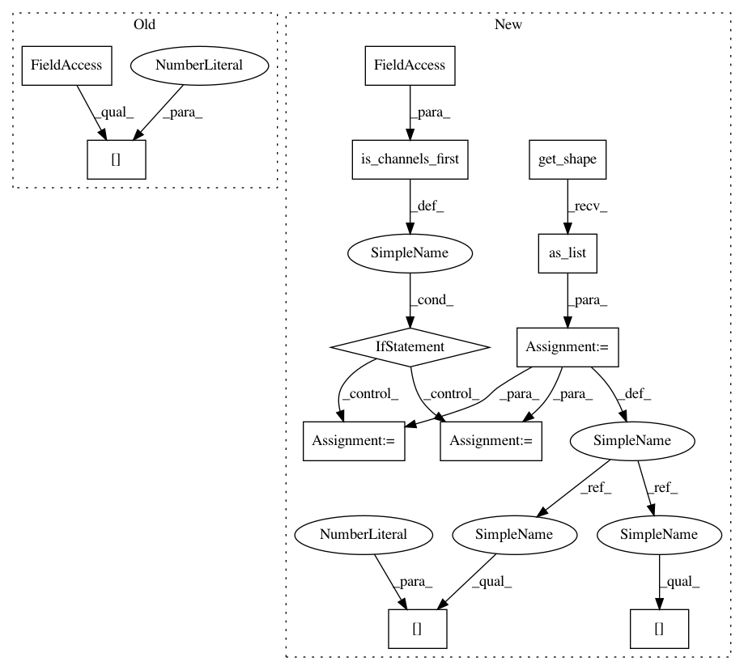

2b976af3813c166bb96190c28cf28f214bd0df97,tensorflow2/tf2cv/models/common.py,MaxPool2d,call,#MaxPool2d#Any#,257
Before Change
out_height = float(height + 2 * padding[0] - self.pool_size[0]) / self.strides[0] + 1.0
if math.ceil(out_height) > math.floor(out_height):
padding = (padding[0] + 1, padding[1])
width = int(x.shape[3])
out_width = float(width + 2 * padding[1] - self.pool_size[1]) / self.strides[1] + 1.0
if math.ceil(out_width) > math.floor(out_width):
padding = (padding[0], padding[1] + 1)
After Change
def call(self, x):
if self.ceil_mode:
x_shape = x.get_shape().as_list()
if is_channels_first(self.data_format):
height = x_shape[2]
width = x_shape[3]
else:
height = x_shape[1]
width = x_shape[2]
padding = self.padding
out_height = float(height + 2 * padding[0] - self.pool_size[0]) / self.strides[0] + 1.0
out_width = float(width + 2 * padding[1] - self.pool_size[1]) / self.strides[1] + 1.0
if math.ceil(out_height) > math.floor(out_height):
In pattern: SUPERPATTERN
Frequency: 4
Non-data size: 12
Instances
Project Name: osmr/imgclsmob
Commit Name: 2b976af3813c166bb96190c28cf28f214bd0df97
Time: 2019-12-25
Author: osemery@gmail.com
File Name: tensorflow2/tf2cv/models/common.py
Class Name: MaxPool2d
Method Name: call
Project Name: osmr/imgclsmob
Commit Name: 2b976af3813c166bb96190c28cf28f214bd0df97
Time: 2019-12-25
Author: osemery@gmail.com
File Name: tensorflow2/tf2cv/models/common.py
Class Name: MaxPool2d
Method Name: call
Project Name: osmr/imgclsmob
Commit Name: 770746015a86f17f9f7f7a084ed1705c8d0a8c38
Time: 2020-02-05
Author: osemery@gmail.com
File Name: tensorflow2/tf2cv/models/pspnet.py
Class Name: PyramidPoolingBranch
Method Name: call
Project Name: osmr/imgclsmob
Commit Name: 770746015a86f17f9f7f7a084ed1705c8d0a8c38
Time: 2020-02-05
Author: osemery@gmail.com
File Name: tensorflow2/tf2cv/models/pspnet.py
Class Name: PSPNet
Method Name: call
Project Name: osmr/imgclsmob
Commit Name: 2b976af3813c166bb96190c28cf28f214bd0df97
Time: 2019-12-25
Author: osemery@gmail.com
File Name: tensorflow2/tf2cv/models/common.py
Class Name: AvgPool2d
Method Name: call